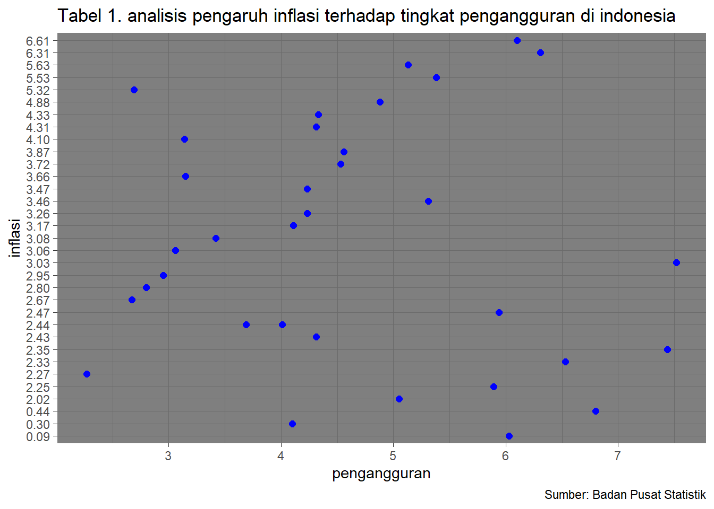

library("readxl")
library("dplyr")
library("ggplot2")Analisis Pengaruh Inflasi Terhadap Tingkat Pengangguran di Indonesia pada Tahun 2023
Metode Penelitian Politeknik APP Jakarta

1 Pendahuluan
1.1 Latar belakang
Inflasi dan pengangguran adalah dua fenomena ekonomi yang secara intrinsik terkait. Studi empiris global menunjukkan adanya korelasi antara tingkat inflasi dan tingkat pengangguran. Namun, pemahaman tentang hubungan ini di tingkat provinsi belum sepenuhnya tergali. Oleh karena itu, penelitian ini akan memberikan kontribusi terhadap literatur ekonomi dengan mengkaji dampak inflasi terhadap tingkat pengangguran di tingkat provinsi di Indonesia.
1.2 Ruang lingkup
Penelitian ini akan memfokuskan pada analisis tingkat inflasi dan tingkat pengangguran di tingkat provinsi di Indonesia selama periode tertentu. Ruang lingkup penelitian ini mencakup analisis perbedaan variabilitas inflasi dan tingkat pengangguran antar provinsi serta faktor-faktor yang mungkin memengaruhi hubungan tersebut.
1.3 Rumusan masalah
- Bagaimana hubungan antara tingkat inflasi dan tingkat pengangguran di tingkat provinsi di Indonesia?
- Apakah terdapat perbedaan signifikan dalam tingkat pengaruh inflasi terhadap tingkat pengangguran antar provinsi?
1.4 Tujuan dan manfaat penelitian
Penelitian ini bertujuan untuk Mengidentifikasi dan menganalisis hubungan antara inflasi dan pengangguran di tingkat provinsi. Menyediakan data dan wawasan bagi pengambilan kebijakan regional. Melalui analisis ini, diharapkan pembaca dapat pemahaman yang lebih baik tentang mekanisme pasar tenaga kerja di tingkat regional.
1.5 Package
Penelitian ini menggunakan Packages antara lain sebagai berikut:
1.6 Studi pustaka
Kondisi makro ekonomi negara merupakan salah satu indikator keberhasilan pembangunan (Hariyanti & Soeharjoto, 2020).
Setiap negara mengupayakan peningkatan pertumbuhan ekonomi dengan menerapkan pembangunan yang berkelanjutan (Soeharjoto & Danova, 2020).
Ekonomi memiliki permasalahan besar terutama pada pengangguran (Astid & Soekapdjo, 2020).
2 Metode penelitian
2.1 Data
data yang saya gunakan adalah tingkat pengangguran dan inflasi berdasarkan provinsi di indonesia
| Provinsi | jumlah pengangguran (%) | jumlah inflasi (%) |
|---|---|---|
| Aceh | 6,03 | 0,09 |
| Sumatera Utara | 5,89 | 2,25 |
| Sumatera Barat | 5,94 | 2,47 |
| Riau | 4,23 | 3,26 |
| Jambi | 4,53 | 3,72 |
| Sumatera Selatan | 4,11 | 3,17 |
| Bengkulu | 3,42 | 3,08 |
| Lampung | 4,23 | 3,47 |
| Kep. Bangka belitung | 4,56 | 3,87 |
| Kep. Riau | 6.08 | 0,44 |
| DKI Jakarta | 6,53 | 2,33 |
| Jawa Barat | 7,44 | 2,35 |
| Jawa Tengah | 5,13 | 5,63 |
| DI Yogyakarta | 3,69 | 2,44 |
| Jawa Timur | 4,88 | 4,88 |
| Banten | 7,52 | 3,03 |
| Bali | 2,69 | 5,32 |
| Nusa Tenggara Barat | 2,08 | 2,80 |
| Nusa Tenggara Timur | 3,14 | 4,10 |
| Kalimantan Barat | 5,05 | 2,02 |
| Kalimantan Tengah | 4,01 | 0,30 |
| Kalimantan Selatan | 4,31 | 2,43 |
| Kalimantan Timur | 5,31 | 3,46 |
| Kalimantan Utara | 4,01 | 2,44 |
| Sulawesi Utara | 6,01 | 6,61 |
| Sulawesi Tengah | 2,95 | 2,95 |
| Sulawesi Selatan | 4,33 | 4,33 |
| Sulawesi Tenggara | 3,15 | 3,66 |
| Gorontalo | 3,06 | 3,06 |
| Sulawesi Barat | 2,27 | 2,27 |
| Maluku | 6,31 | 6,31 |
| Maluku Utara | 4,31 | 4,31 |
| Papua Barat | 5,38 | 5,53 |
| Papua | 2,67 | 2,67 |
penelitian ini menggunakan data yang bersumber dari badan puusat statistik (BPS)
baca data
library("readxl")
dat<-read_excel("pengangguraninflasi.xlsx")
head(dat)# A tibble: 6 × 2
x y
<dbl> <chr>
1 6.03 0.09
2 5.89 2.25
3 5.94 2.47
4 4.23 3.26
5 4.53 3.72
6 4.11 3.17 library("dplyr")
library("ggplot2")
ggplot(data=dat,aes(x=x,y=y)) +
geom_point(color="blue",size=2) +
labs(title="Tabel 1. analisis pengaruh inflasi terhadap tingkat pengangguran di indonesia",
x="pengangguran",
y="inflasi",
caption = "Sumber: Badan Pusat Statistik") +
theme_dark()
2.2 metode analisis
Metode yang dipilih adalah regresi univariat atau Ordinary Least Square (OLS) dengan 1 variabel independen. Penelitian ini merbaksud mencari hubungan antara pengaruh inflasi terhaddap tingkat pengangguran di indonesia. Spesifikasi yang dilakukan adalah:
\[ y_{t}=\beta_0 + \beta_1 x_t+\mu_t \] di mana \(y_t\) adalah tingkat pengangguran dan \(x_t\) adalah inflasi.
3 pembahasan
3.1 pembahasan masalah
library("readxl")
dat<-read_excel("pengangguraninflasi.xlsx")
head(dat)# A tibble: 6 × 2
x y
<dbl> <chr>
1 6.03 0.09
2 5.89 2.25
3 5.94 2.47
4 4.23 3.26
5 4.53 3.72
6 4.11 3.17 3.2 analisis masalah
tampilan data yang dihasilkan dari regresi tersebut adalah sebagai berikut
reg<-lm(y~x,data=dat)
summary(reg)
Call:
lm(formula = y ~ x, data = dat)
Residuals:
Min 1Q Median 3Q Max
-3.1119 -0.8498 -0.1797 0.7255 3.4113
Coefficients:
Estimate Std. Error t value Pr(>|t|)
(Intercept) 3.47559 0.91884 3.783 0.000642 ***
x -0.04539 0.19059 -0.238 0.813288
---
Signif. codes: 0 '***' 0.001 '**' 0.01 '*' 0.05 '.' 0.1 ' ' 1
Residual standard error: 1.554 on 32 degrees of freedom
Multiple R-squared: 0.001769, Adjusted R-squared: -0.02943
F-statistic: 0.05671 on 1 and 32 DF, p-value: 0.81333.3 kesimpulan
Berdasarkan hasil penelitian mengenai pengaruh inflasi terhadap tingkat pengangguran di Indonesia pada tahun 2023, ditemukan bahwa terjadi penurunan sebesar 4,05% dalam tingkat pengangguran. Penurunan ini kemungkinan terkait dengan keberhasilan pemerintah dalam mengelola tingkat inflasi secara efektif. Dampak positif ini juga dapat diatribusikan pada kebijakan yang mendukung stabilitas ekonomi, memicu investasi, dan mendorong pertumbuhan sektor ekonomi, yang pada akhirnya berkontribusi pada penciptaan lapangan kerja. Temuan ini memberikan landasan bagi pembentukan kebijakan ekonomi berkelanjutan yang memperhitungkan keseimbangan antara stabilitas harga dan peluang kerja.
3.4 referensi
BADAN PUSAT STATISTIK. n.d. “Tingkat Pengangguran Terbuka Menurut Provinsi (Persen), 2023.”
Soeharjoto, and Mitha Rachma Oktavia. n.d. “Pengaruh Inflasi, Indeks Pembangunan Manusia, Dan Upah Minimum Provinsi Terhadap Pengangguran Di Indonesia.”